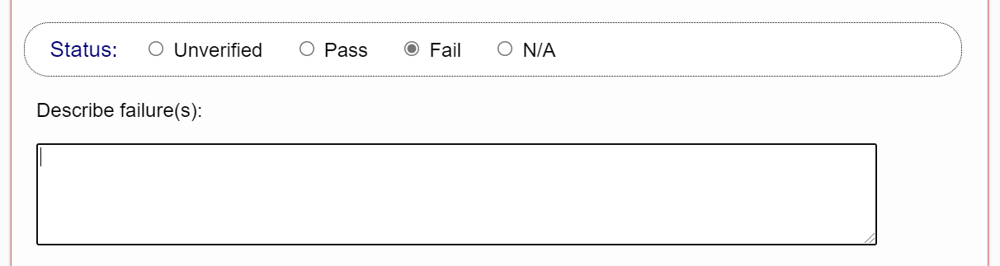

Verifying Conformance
The next step in manually evaluating the publication is to check the required conformance requirements. The Conformance Verification tab provides a list of requirements that must be passed for each WCAG success criterion and each additional EPUB requirement.
Step through each success criterion and check that it is satisfied by the content. Each criterion includes a status section to simplify tracking the overall conformance, and to facilitate generating a report at the end of the evaluation.

The following list describes each of the available status options.
- Unverified
-
All success criteria are set to unverified by default, although this status may be changed when the Ace JSON report is loaded and analyzed (e.g., some criteria might be set to not applicable).
All success criteria for the conformance level specified in the evaluation setup must be changed to one of the following status options prior to generating the final report. Failure to do so will result in a validation error. Note that Level AAA success criteria may be left unverified, in which case they will not be included in the final report.
- Pass
-
After verifying that the requirements of a success criterion are satisfied, set its status to pass.

Do not use the pass setting for success criteria that are not applicable to the content. For example, if the publication does not contain audio or video, do not pass it on success criteria for audio and video content. Doing so suggests that the publication contains content it does not. Use the not applicable status in these cases.
- Fail
-
If the publication fails a success criterion, setting the status to fail will reveal a field to describe why it failed.
Clicking the fail status reveals the text field where you can note the failure(s) Information added to this field is included in the generated report for the publication.
- N/A
-
Set the status to "N/A" (not applicable) for any criteria that are not applicable to the publication.

Do not state that a publication passes criteria that are not applicable to its content, as this practice is misleading to anyone reading the final report.
An optional note field is provided after the status section for recording any general notes you wish to provide. These notes are included in the generated report.